TRACE: Trajectory Synchronization for Training-Free Resolution Extension in Video Generation
* Corresponding author
Abstract
More text-to-video models are available, but many remain limited to low resolutions. Training them for higher resolutions is costly, while existing training-free methods still struggle with fine detail, scene structure, and efficiency. We propose TRACE, a training-free method that synchronizes low- and high-resolution generation trajectories. During early denoising, TRACE aligns predicted scene content at corresponding noise levels. It computes high-resolution updates from low-resolution predictions and the current high-resolution state, without high-resolution model inference. The high-resolution trajectory retains fine-grained variation for generating new details. Local window attention then refines fine details in a shared high-resolution latent state. TRACE checks suspected duplicate subjects against the corresponding low-resolution layout and corrects selected regions and their solver history while preserving detail elsewhere. Experiments across all kinds of video generation backbones and resolutions show improved perceptual quality and text–video alignment over FreeSwim, a state-of-the-art training-free method, with 2.0–2.9× end-to-end speedups. Our code and models will be released at https://github.com/libozhu03/TRACE.
Method Overview
TRACE extends pretrained video generation to higher resolutions without training. The low-resolution trajectory provides scene references for high-resolution generation: cross-scale trajectory synchronization (CSTS) guides early denoising, window attention develops local detail on a shared latent canvas, and trajectory-guided structural correction (TGSC) corrects repeated structures.
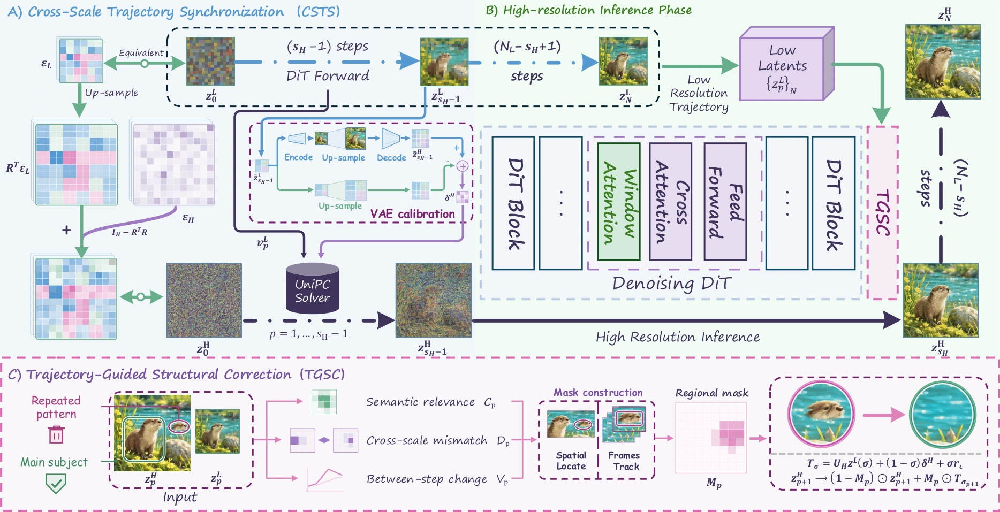
Cross-Scale Trajectory Synchronization
CSTS synchronizes early denoising by constructing high-resolution updates from the low-resolution clean prediction and the current high-resolution noisy state, with a fixed VAE-transfer offset. This aligns scene content without high-resolution model inference while retaining the high-resolution trajectory's own state. In the figure, direct velocity upsampling (top) misaligns the clean prediction, whereas CSTS (bottom) preserves the intended structure. The first three columns visualize latents; the last shows decoded results.
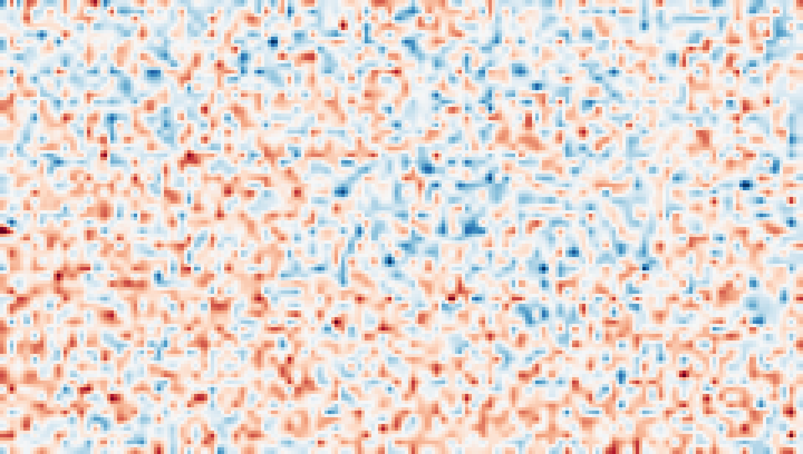
(a) Upsampled Low state
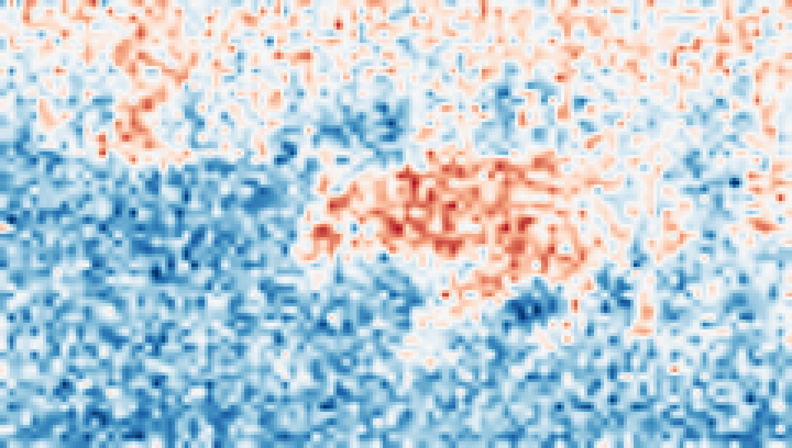
(b) Upsampled velocity
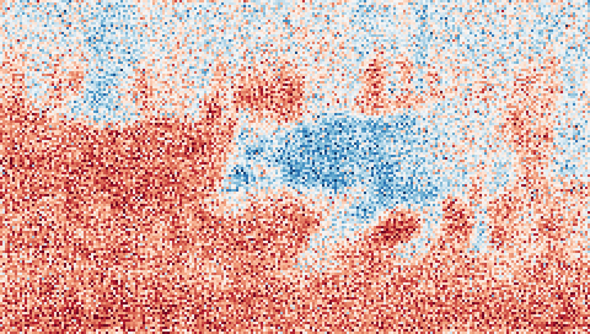
(c) Unaligned clean prediction
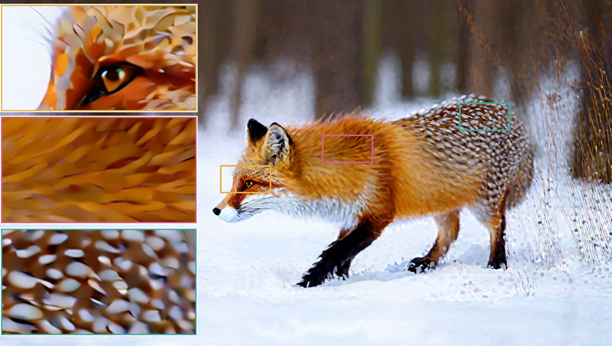
(d) Unaligned result
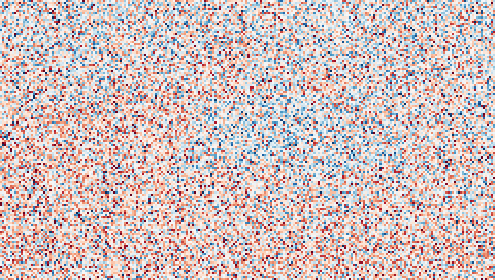
(e) High state
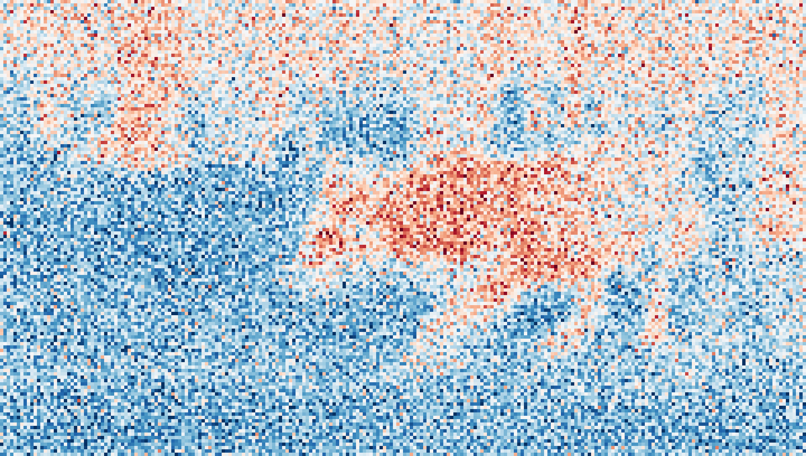
(f) Corrected velocity
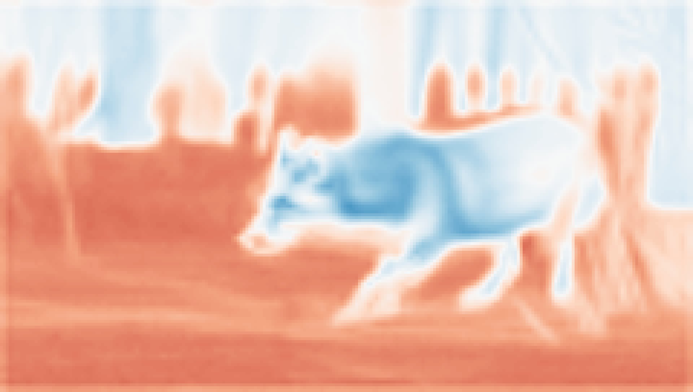
(g) Aligned clean prediction
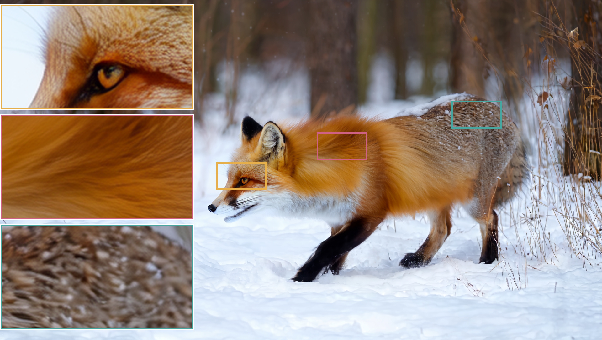
(h) Aligned result
Trajectory-Guided Structural Correction
TGSC uses the low-resolution layout to identify repeated subjects during high-resolution refinement. Semantic relevance, cross-scale mismatch, and between-step change guide regional corrections to the latent state and solver history, preserving detail elsewhere. The figure follows two extra people from detection to removal; later denoising restores grass detail in the corrected regions.
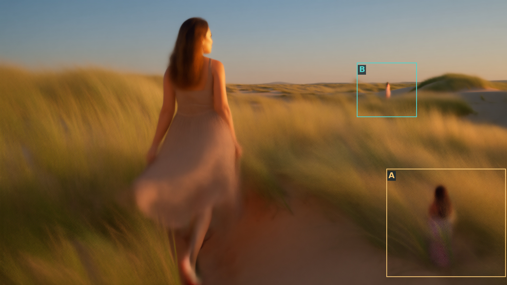
(a) High-resolution prediction
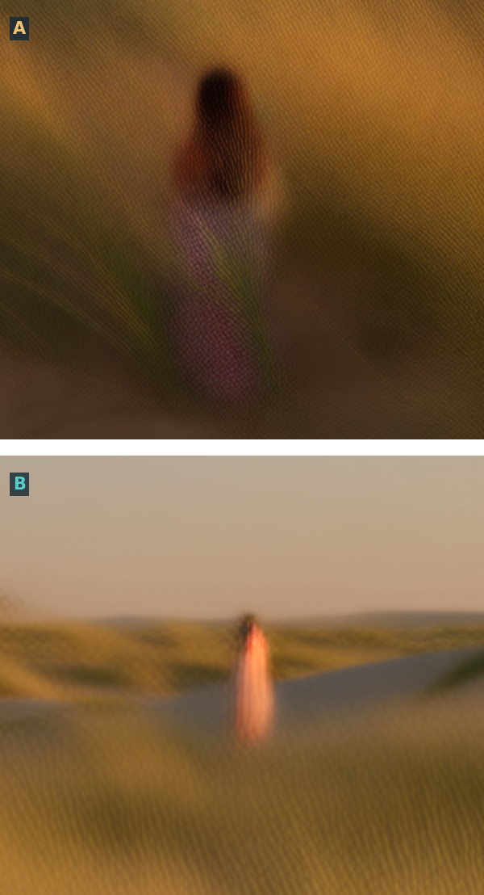
(b) Before correction
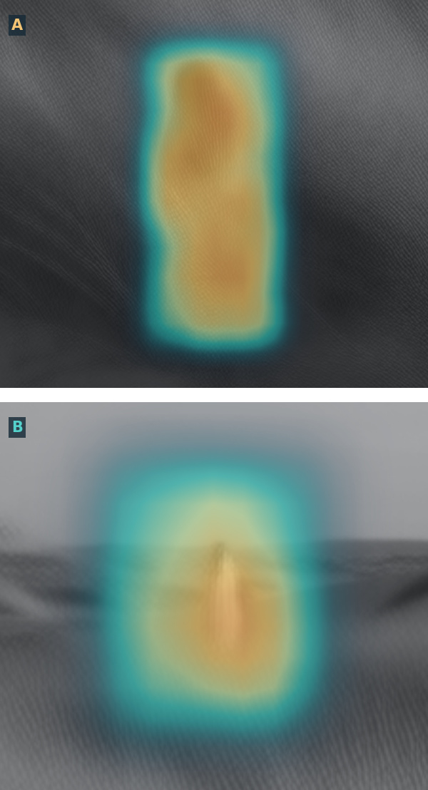
(c) Detection evidence
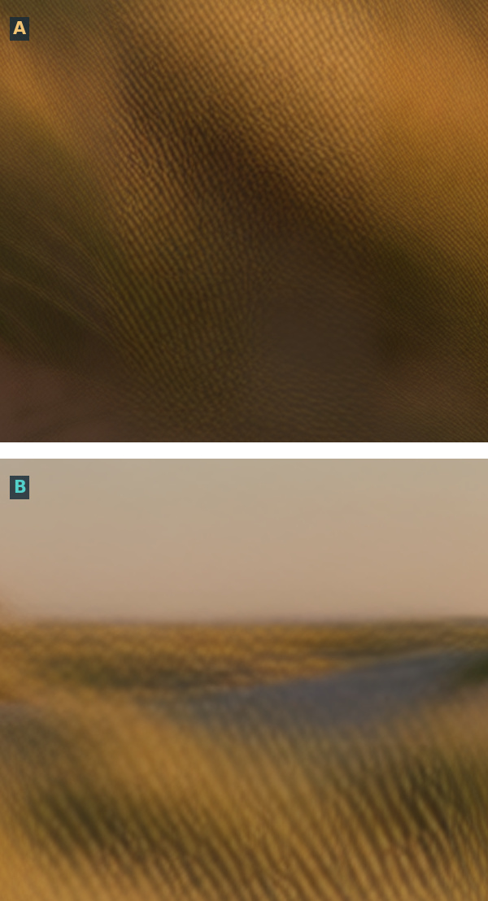
(d) After correction
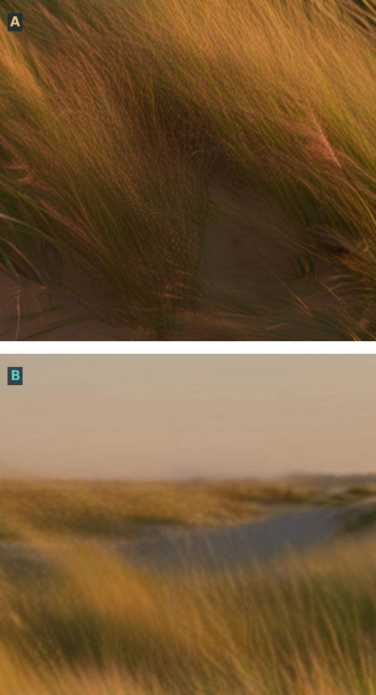
(e) Final
Evaluation
Quantitative Results
We evaluate on 120 fixed prompt–reference pairs, with matched seeds and 81 frames at 16 FPS. The paper reports end-to-end latency on one A800 GPU, including low-resolution sampling, VAE transfers, and structural correction. TRACE is 2.74×, 2.92×, and 2.02× faster than FreeSwim on Wan2.1, Wan2.2, and Bernini, respectively.
Red and blue indicate the best and second-best scores within each backbone, as in the paper. ↑ Higher is better; ↓ lower is better.
| Method | QA ↑ | DOVER ↑ | VS ↑ | VBench Mean ↑ | VQA ↑ | Time (s) ↓ |
|---|---|---|---|---|---|---|
| Wan2.1-T2V-1.3B · 1920 × 1088 | ||||||
| Direct Inference | 4.165 | 0.5875 | 2.730 | 0.7366 | 0.6878 | 3,366 |
| Cheap Scaling | 4.568 | 0.6546 | 2.747 | 0.7533 | 0.8539 | 3,927 |
| FreeScale | 3.761 | 0.5835 | 2.718 | 0.7328 | 0.8207 | 3,968 |
| RIFLEx | 4.080 | 0.5840 | 2.800 | 0.7305 | 0.6620 | 3,338 |
| CineScale | 3.854 | 0.6234 | 2.725 | 0.7395 | 0.8630 | 2,360 |
| FreeSwim | 4.381 | 0.5525 | 2.833 | 0.7570 | 0.8735 | 5,010 |
| TRACE | 4.690 | 0.6857 | 2.856 | 0.7622 | 0.8870 | 1,826 |
| Wan2.2-T2V-A14B · 2560 × 1440 | ||||||
| FreeSwim | 4.524 | 0.6084 | 2.757 | 0.7551 | 0.9160 | 27,788 |
| TRACE | 4.752 | 0.6900 | 2.793 | 0.7628 | 0.9519 | 9,526 |
| Bernini-R-1.3B · 1920 × 1088 | ||||||
| FreeSwim | 4.572 | 0.6017 | 2.734 | 0.7606 | 0.8929 | 5,708 |
| TRACE | 4.727 | 0.6946 | 2.812 | 0.7637 | 0.9024 | 2,831 |
Table 1. Quantitative comparison across three video generation backbones.
View all paper metrics
| Method | QA ↑ | DOVER ↑ | VS ↑ | SC ↑ | MS ↑ | BC ↑ | OC ↑ | AQ ↑ | IQ ↑ | Mean ↑ | VQA ↑ | BRISQUE* ↓ | NIQE* ↓ | Time (s) ↓ |
|---|---|---|---|---|---|---|---|---|---|---|---|---|---|---|
| Wan2.1-T2V-1.3B · 1920 × 1088 | ||||||||||||||
| Direct Inference | 4.165 | 0.5875 | 2.730 | 0.9787 | 0.9855 | 0.9755 | 0.2224 | 0.6008 | 0.6570 | 0.7366 | 0.6878 | 0.3400 | 0.2060 | 3,366 |
| Cheap Scaling | 4.568 | 0.6546 | 2.747 | 0.9690 | 0.9810 | 0.9732 | 0.2400 | 0.6454 | 0.7111 | 0.7533 | 0.8539 | 0.3518 | 0.2063 | 3,927 |
| FreeScale | 3.761 | 0.5835 | 2.718 | 0.9676 | 0.9798 | 0.9707 | 0.2344 | 0.6010 | 0.6435 | 0.7328 | 0.8207 | 0.4282 | 0.2579 | 3,968 |
| RIFLEx | 4.080 | 0.5840 | 2.800 | 0.9753 | 0.9857 | 0.9735 | 0.2192 | 0.5874 | 0.6420 | 0.7305 | 0.6620 | 0.3380 | 0.2570 | 3,338 |
| CineScale | 3.854 | 0.6234 | 2.725 | 0.9681 | 0.9796 | 0.9736 | 0.2388 | 0.6085 | 0.6686 | 0.7395 | 0.8630 | 0.3406 | 0.2071 | 2,360 |
| FreeSwim | 4.381 | 0.5525 | 2.833 | 0.9705 | 0.9901 | 0.9753 | 0.2514 | 0.6377 | 0.7172 | 0.7570 | 0.8735 | 0.2132 | 0.1534 | 5,010 |
| TRACE | 4.690 | 0.6857 | 2.856 | 0.9707 | 0.9899 | 0.9791 | 0.2492 | 0.6648 | 0.7193 | 0.7622 | 0.8870 | 0.1897 | 0.1406 | 1,826 |
| Wan2.2-T2V-A14B · 2560 × 1440 | ||||||||||||||
| FreeSwim | 4.524 | 0.6084 | 2.757 | 0.9397 | 0.9848 | 0.9513 | 0.2562 | 0.6647 | 0.7337 | 0.7551 | 0.9160 | 0.1736 | 0.1300 | 27,788 |
| TRACE | 4.752 | 0.6900 | 2.793 | 0.9673 | 0.9846 | 0.9722 | 0.2544 | 0.6656 | 0.7324 | 0.7628 | 0.9519 | 0.1817 | 0.1294 | 9,526 |
| Bernini-R-1.3B · 1920 × 1088 | ||||||||||||||
| FreeSwim | 4.572 | 0.6017 | 2.734 | 0.9698 | 0.9892 | 0.9727 | 0.2548 | 0.6553 | 0.7216 | 0.7606 | 0.8929 | 0.1941 | 0.1349 | 5,708 |
| TRACE | 4.727 | 0.6946 | 2.812 | 0.9740 | 0.9895 | 0.9780 | 0.2517 | 0.6723 | 0.7171 | 0.7637 | 0.9024 | 0.1860 | 0.1316 | 2,831 |
SC: subject consistency; MS: motion smoothness; BC: background consistency; OC: overall consistency; AQ: aesthetic quality; IQ: imaging quality. BRISQUE* and NIQE* are normalized score gaps between generated and reference patches; smaller gaps indicate closer local image statistics.
Visual Results
Original paper comparisons show full generated frames and enlarged detail crops. These examples illustrate finer local structure across backbones, including 4K generation without the repeated subject visible in the FreeSwim example. Each pair includes matched full frames and two enlarged crops; click an image to see its original resolution.
Wan2.2-T2V-A14B · 2560 × 1440
Prompt: The video showcases a breathtaking aerial view of a majestic mountain surrounded by lush greenery and vast ocean waters.
Wan2.2-T2V-A14B · 3840 × 2160
Prompt: A woman in a flowing dress walks barefoot across sandy dunes with tall grasses swaying in the background, bathed in the golden light of the setting sun.
Bernini-R-1.3B · 1920 × 1080
Prompt: The video showcases a stunning aerial view of a modern cityscape with a mix of historic and contemporary architecture. …
Scaling to Ultra-High Resolution
TRACE scales to 4K by transferring refined high-resolution content and continuing generation with low-resolution references. Below, the central panels compare FreeSwim (left) with TRACE (right), while the outer columns show detail crops with FreeSwim above and TRACE below. The paper reports an 11.8× speedup for this 4K example.
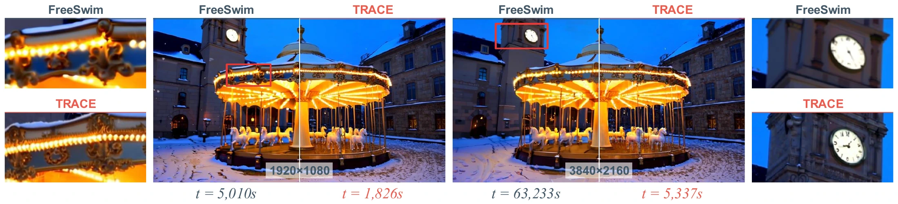
Ablation Study
CSTS improves scene structure and local fidelity; TGSC complements it by removing duplicated subjects. The following ablation uses a thirty-prompt subset on Wan2.1 at 1920 × 1080 with matched prompts and seeds. The baseline uses shared-canvas window attention alone. In the visual example, CSTS alone produces an extra cyclist; TGSC removes it while preserving the main rider and background detail.
| Variant | VBench Mean ↑ | VQA ↑ | BRISQUE* ↓ | NIQE* ↓ |
|---|---|---|---|---|
| Baseline | 0.7040 | 0.7929 | 0.2550 | 0.1406 |
| + CSTS | 0.7518 | 0.9464 | 0.2100 | 0.1277 |
| + TGSC | 0.7061 | 0.8291 | 0.2536 | 0.1398 |
| + CSTS + TGSC | 0.7528 | 0.9653 | 0.2081 | 0.1264 |
Table 2. CSTS and TGSC ablation on Wan2.1.
Prompt: A cyclist wearing a yellow jacket rides along a tree-lined street …
BibTeX
@misc{zhu_trace,
title = {TRACE: Trajectory Synchronization for Training-Free Resolution Extension in Video Generation},
author = {Zhu, Libo and Li, Fan and Wang, Zhixin and Wang, Binglu and Dong, Weisheng and Zhang, Yulun}
}